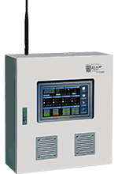

FARMSYS · ENVIRONMENT CONTROL
팜시스 FSC-1520
환경 측정에서 자동제어·기록까지 하나의 시스템으로.
설정값과 센서조건에 따라 설비를 정밀하게 운전하고, 관리자는 필요한 정보를 확인합니다.
31시설원예 자동화
31년 기술력
自센서·소프트웨어
주요 구성품 자체 개발
21서로 다른 설비를
독립적으로 통합제어
24현장 자동운전과
웹 원격관리 지원

WOOSUNG HITEC설정한 환경조건에 따라
설비를 정밀하게 운전합니다.환경센서 → 설정조건 비교 → 설비 제어
총 21개 독립 제어채널
10정·역 제어10ON·OFF1관수 제어
고정된 채널 구성의 현재 FSC-1520 기준입니다.
핵심 기능 카드를 눌러 장점과 확장 방법을 확인하세요.
스마트폰 조작이 스마트팜의 전부는 아닙니다.
생산성 향상을 위한 조건 기반 정밀제어가 중심이며, 원격관리는 상태·데이터·CCTV 확인과 이상 발생 시 응급운전을 돕습니다.